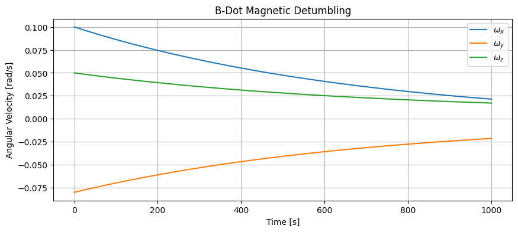
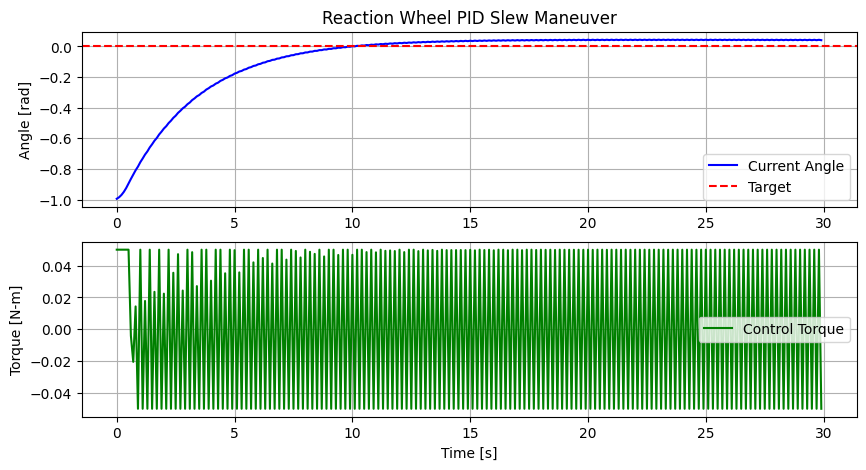

Tutorial 15: Reaction Wheel & Magnetorquer Slew Control
This tutorial covers Attitude Control strategies for spacecraft detumbling and precise attitude slewing using B-Dot controllers for Magnetorquers and PID controllers for Reaction Wheels.
1. Theory Prerequisite
1.1 B-Dot Detumbling
When a spacecraft is tumbling tipsy after release, Magnetorquers (MGT) can interact with the Earth’s magnetic field \(B\) to generate damping torque.
Control Law: Dipole Moment \(m = -K \dot{B}\)
Torque Produced: \(T = m \times B\)
Effect: Slows down the rotation rate without requiring reaction wheels.
1.2 PID Slew Control
Once detumbled, precise re-orientation requires Reaction Wheels (RW).
Input: Angular error (e.g., from quaternions)
Action: Controller \(u = K_p e + K_i \int e dt + K_d \dot{e}\)
Output: Desired momentum exchange causing rotational acceleration opposite to rigid body.
import numpy as np
import matplotlib.pyplot as plt
from gnc_toolkit.classical_control.bdot import BDot
from gnc_toolkit.classical_control.pid import PID
print("Imports successful.")
Imports successful.
2. Demonstration: B-Dot Detumbling Simulation
We simulate a tumbling spacecraft slowing down its angular rates via magnetic torque interaction.
# Spacecraft Properties
Inertia = np.diag([0.1, 0.1, 0.1]) # 3U CubeSat kind [kg*m^2]
inv_I = np.linalg.inv(Inertia)
omega = np.array([0.1, -0.08, 0.05]) # Initial tumbling rates [rad/s]
B_field = np.array([2e-5, 1e-5, -3e-5]) # Earth B-field approximation [Tesla]
bdot_ctrl = BDot(gain=100000.0) # High gain for demo scaling
dt = 0.5
steps = 2000
history_omega = []
for k in range(steps):
# 1. Measure B_dot (approximated here via cross product w x B for body rotation info)
# B_dot in body frame: dB_dt = - omega x B
B_dot = -np.cross(omega, B_field)
# 2. Control Output
dipole = bdot_ctrl.calculate_control(B_dot)
# 3. Torque generation
T_ctrl = np.cross(dipole, B_field)
# 4. Dynamics (Euler's equations):
# I * omega_dot + omega x (I * omega) = T
omega_dot = inv_I @ (T_ctrl - np.cross(omega, Inertia @ omega))
omega = omega + omega_dot * dt
history_omega.append(omega.copy())
history_omega = np.array(history_omega)
time = np.arange(steps) * dt
plt.figure(figsize=(10, 4))
plt.plot(time, history_omega[:, 0], label='$\omega_x$')
plt.plot(time, history_omega[:, 1], label='$\omega_y$')
plt.plot(time, history_omega[:, 2], label='$\omega_z$')
plt.xlabel('Time [s]')
plt.ylabel('Angular Velocity [rad/s]')
plt.title('B-Dot Magnetic Detumbling')
plt.legend()
plt.grid(True)
plt.show()
print(f"Final rates magnitude: {np.linalg.norm(omega):.5f} rad/s")

Final rates magnitude: 0.03476 rad/s
3. Demonstration: PID Slew Maneuver
Here we control a single axis angle using a Reaction Wheel output mapping into PID demands.
# 1D Angle Tracking loop
pid_axis = PID(kp=1.0, ki=0.01, kd=3.0, output_limits=(-0.05, 0.05)) # Torque limits [Nm]
angle = -1.0 # radians (Start demand from -1 rad offset index offset)
rate = 0.0
target_angle = 0.0
dt_pid = 0.1
slew_steps = 300
history_angle = []
history_torque = []
I_axis = 0.1
for k in range(slew_steps):
error = target_angle - angle
# Update PID
torque = pid_axis.update(error, dt_pid)
# 1D Rigid Dynamics
accel = torque / I_axis
rate += accel * dt_pid
angle += rate * dt_pid
history_angle.append(angle)
history_torque.append(torque)
time_slew = np.arange(slew_steps) * dt_pid
plt.figure(figsize=(10, 5))
plt.subplot(2, 1, 1)
plt.plot(time_slew, history_angle, 'b-', label='Current Angle')
plt.axhline(y=target_angle, color='r', linestyle='--', label='Target')
plt.ylabel('Angle [rad]')
plt.title('Reaction Wheel PID Slew Maneuver')
plt.legend()
plt.grid(True)
plt.subplot(2, 1, 2)
plt.plot(time_slew, history_torque, 'g-', label='Control Torque')
plt.ylabel('Torque [N-m]')
plt.xlabel('Time [s]')
plt.legend()
plt.grid(True)
plt.show()
